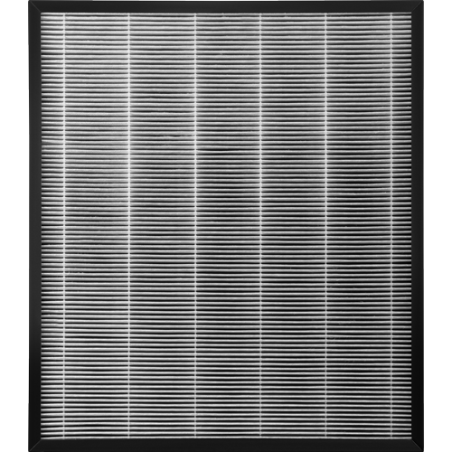

HEPA-фильтр A804
Система фильтрации от пыли и бактерий
Высокоэффективный фильтр тонкой очистки воздуха True HEPA Н13, представляет собой пылевой воздушный фильтр высокой эффективности.
Он задерживает 99,95% частиц размером от 0,06 мкм и больше, а также более 99,97% всех частиц размером от 0,3 мкм. HEPA фильтры BORK обработаны специальной антибактериальной пропиткой, препятствующей образованию грибков и бактерий как на поверхности фильтра, так и внутри него. Данная пропитка разработана специалистами компании Mitsubishi и является их ноу-хау. Технология пропитки целлюлозно-бумажных материалов известна давно и широко используется на высокотехнологичных производствах, однако из-за высокой стоимости большинство производителей HEPA фильтров ее не используют.
Надежная защита
Эффективная система очищения уничтожает бактерии и мельчайшие частицы пыли, а также защищает от респираторных заболеваний в течение 12 месяцев. Фильтр подходит для воздухоочистителей А804.